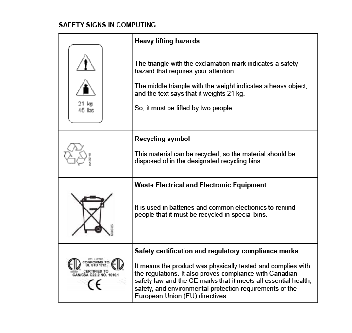

Protocolos de Seguridad¶
Antes de trabajar con hardware de computadoras, es esencial comprender y aplicar reglas de seguridad que protejan no solo el equipo, sino también a las personas que lo manipulan y al entorno. Incluso pequeños errores durante el desmontaje o montaje pueden provocar lesiones, daños en los componentes o riesgos como incendios y descargas eléctricas. Al seguir las reglas de seguridad, aseguras un entorno de aprendizaje seguro y desarrollas buenos hábitos profesionales que te servirán a lo largo de tu carrera.
En esta sección, revisaremos ocho áreas clave de seguridad para guiarte en tu trabajo:
Seguridad en el lugar de trabajo
Prevención de accidentes
Factores generales de riesgo
Factores generales de riesgo en el manejo de computadoras
Señales de seguridad
Precauciones en el taller
Métodos y sistemas de extinción de incendios
Primeros auxilios
Electricidad en la computadora: Riesgos Laborales y Protección Ambiental¶
1) Seguridad en el lugar de trabajo¶
Es el conjunto de técnicas y procedimientos destinados a eliminar o reducir el riesgo de accidentes laborales y los daños que puedan causar: principalmente a las personas, pero también a los bienes y al medio ambiente.
Su objetivo es prevenir accidentes laborales evitando su ocurrencia o minimizando sus consecuencias inmediatas sobre las personas y los bienes. Por lo tanto, la seguridad en el trabajo no solo considera los accidentes que causan lesiones, sino también aquellos que podrían causarlas.
2) Prevención de accidentes¶
La seguridad busca prevenir los accidentes laborales, que son esencialmente eventos anormales, no intencionados y no deseados que ocurren inesperadamente y que generalmente son evitables. Interrumpen la actividad laboral normal y pueden causar lesiones a las personas. Hay situaciones que pueden provocar accidentes, ya sea con lesiones o sin ellas (incidentes).
Para prevenir accidentes, es necesario:
Conocer los riesgos a los que estamos expuestos
Entender que un accidente puede ocurrir en cualquier momento
Ser consciente de que también te puede pasar a ti
Comprender las consecuencias reales de los accidentes
Estar informado sobre las pérdidas humanas y económicas que pueden causar los accidentes
3) Factores generales de riesgo¶
Entorno ambiental: Debe garantizar el confort térmico, visual y acústico. La falta de estos puede llevar a errores que pueden causar accidentes o simplemente resultar en irritabilidad. Una situación confortable es aquella en la que las variables ambientales no generan distracciones, fatiga o incomodidad. El objetivo es asegurar que la persona no experimente molestias que distraigan su atención o le impidan concentrarse en elementos importantes para su salud y seguridad.
Organización: Un elemento clave del entorno es cómo se organiza el trabajo (formación, información, comunicación, relaciones de grupo, etc.), que también debe ser cómodo y estar bien adaptado a los trabajadores.
Confort psíquico: Esto es menos evidente que el confort físico o mental y depende de los rasgos individuales de cada persona. La psicología nos ayuda a agrupar comportamientos para predecir reacciones. El malestar puede aparecer a corto plazo (irritabilidad, ansiedad), medio plazo (alteraciones del sueño, cefaleas tensionales) o largo plazo (depresión, afecciones gastrointestinales, cardiovasculares o cutáneas), afectando a las personas tanto dentro como fuera del lugar de trabajo.
4) Factores generales de riesgo en el manejo de computadoras¶
Instalaciones eléctricas: Los sistemas informáticos funcionan con electricidad, lo que puede provocar descargas eléctricas al trabajador.
Materiales con riesgo de incendio: Los cortocircuitos eléctricos pueden provocar incendios no solo en la computadora, sino también en el sistema eléctrico del edificio.
Manejo de herramientas o componentes: El uso de herramientas o piezas de computadoras presenta riesgos para el trabajador.
Entorno de trabajo: El ruido, la humedad, el polvo, el frío, etc., pueden afectar la salud del trabajador.
Posturas forzadas: La postura que adoptamos durante el trabajo diario puede provocar problemas físicos al trabajador.
Manejo de cargas: Transportar materiales pesados puede causar lesiones físicas.
Carga mental y adicción: Concentrarse durante largos periodos también puede ser un factor de riesgo. El uso excesivo de la computadora puede llevar a adicciones (a Internet, juegos, mensajería, redes sociales, etc.) que deben abordarse antes de que se conviertan en problemas de salud.
5) Señales de seguridad¶
Es importante conocer y respetar las señales de advertencia que aparecen en diferentes elementos.




Además de las precauciones, también comprobaremos si cumplen con las principales normativas de seguridad, especialmente las de la Comunidad Europea.
Regulado por Estados Unidos y Canadá (Se puede encontrar en discos duros, disqueteras…)

Regulado por la Unión Europea (Ha superado los estándares de seguridad de la Unión Europea)

Normas Europeas de Certificación Eléctrica (Ha superado los estándares de seguridad eléctrica de la Unión Europea)

Regulado por normas alemanas (TEST) (Geprüfte Sicherheitt)

6) Precauciones en el taller¶

Ubicación: Elige un espacio de trabajo seco y bien ventilado. Debe haber suficiente luz para ver claramente todos los componentes. Evita áreas con alfombras o tapetes, ya que tienden a generar electricidad estática. Una buena opción sería una superficie desnuda y conectada a tierra.

Electricidad estática: La electricidad estática es el mayor peligro para las piezas que ensamblamos. Incluso una descarga diminuta, demasiado pequeña para que la sintamos, puede dañar piezas electrónicas costosas y delicadas como la CPU, la RAM y otros chips. Es importante usar una pulsera antiestática.

Fuente de alimentación: Apaga la computadora y desconecta su fuente de alimentación antes de instalar o quitar cualquier componente. Si hay electricidad fluyendo por los componentes mientras los manipulas, pueden dañarse, incluida la placa base. Nunca cortes ni retires el cable de tierra del cable de alimentación. Esta medida de seguridad protege contra posibles descargas de alto voltaje entre la computadora y el usuario.

Cortes: Los cortes pueden ocurrir al usar herramientas puntiagudas (destornilladores, pelacables, cuchillos, etc.) o por partes metálicas afiladas dentro de la computadora. Ten cuidado con los bordes afilados, especialmente dentro de la computadora. Manipula el interior de la carcasa y sus componentes con cuidado para evitar cortarte las manos. (Los bordes afilados de la carcasa pueden suavizarse con papel de lija antes del montaje.)

Desmontaje de componentes: Evita desmontar componentes electrónicos como la fuente de alimentación o el monitor, ya que es muy peligroso. Contienen condensadores de alto voltaje que pueden causar graves descargas eléctricas si se tocan. Puedes recibir una descarga grave o incluso mortal, incluso cuando la unidad está desenchufada, porque almacenan mucha energía.

Toxicidad: Algunos componentes electrónicos pueden ser tóxicos, por lo que estamos expuestos a este riesgo, generalmente a través de heridas.

Cortocircuito o incendio: Un incendio puede ser causado por un cortocircuito eléctrico, sobrecalentamiento o incluso la explosión de una batería. Debemos evitar tener líquidos conductores cerca mientras manipulamos la computadora (café, agua, etc.) y evitar que objetos metálicos caigan dentro de la carcasa mientras la computadora está enchufada. Es importante comprobar que los orificios de ventilación no estén bloqueados y funcionen correctamente.
7) Métodos y sistemas de extinción de incendios¶
Métodos de extinción:
|
Extintores |
|
Carretes de manguera |
|
Columnas secas en edificios |
|
Rociadores automáticos |


{kind=link}
Diferentes materiales y equipos requieren diferentes tipos de extintores. Saber cuál usar puede prevenir accidentes y proteger tanto a las personas como a los dispositivos. La imagen a continuación muestra las cinco clases de fuego (A, B, C, D y K). Cada clase se refiere al tipo de material que se está quemando, por ejemplo, Clase A para papel y textiles, Clase B para líquidos inflamables y Clase C para equipos eléctricos.
Clases de fuego¶

Diferentes extintores están diseñados para diferentes clases de fuego. Usar el incorrecto puede empeorar el incendio o causar daños. La siguiente tabla muestra qué extintores son seguros y efectivos para cada tipo de fuego.
Tipo de extintor |
CLASE A |
CLASE B |
CLASE C |
CLASE D |
CLASE K |
|---|---|---|---|---|---|
Espuma |
Sí |
Sí |
No |
No |
No |
Polvo ABC |
Sí |
Sí |
Sí |
Sí |
No |
Dióxido de carbono |
No |
Sí |
No |
Sí |
No |
Químico húmedo |
Sí |
No |
No |
No |
Sí |
Agua |
Sí |
No |
No |
No |
No |

Al trabajar con equipos eléctricos, como computadoras, utiliza siempre un extintor de Clase C (por ejemplo, CO₂ o Halotron). Estos no conducen electricidad y previenen daños adicionales a los dispositivos.
8) Primeros auxilios¶
En caso de lesión, se recomienda ponerse en contacto con la persona responsable de los primeros auxilios y/o llamar al Servicio de Emergencias Médicas.
En la siguiente hoja 👇, encontrarás un resumen de las Reglas de Seguridad para el Montaje y Desmontaje de Computadoras, que deberás usar como referencia durante todas las próximas sesiones: